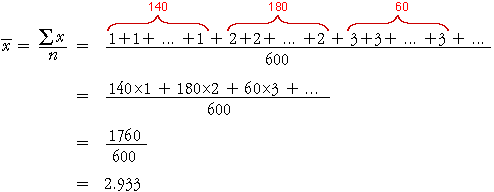
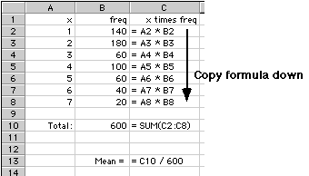

Frequency table
Bar charts for discrete data are based on the frequencies
of the different values — i.e. the number of times each value occurs in the
data set.
In data sets with a small number of possible counts (say 20 or fewer), a
frequency table is a useful summary in its own right. Unlike frequency tables
for continuous data, no grouping is involved so no information is lost.
Calculating the mean from a frequency table
The mean of a discrete data set can be easily calculated from a frequency
table.
In market research, it is important to understand the characteristics of
the respondents for various different types of survey. The following frequency
table describes the number of people in each of 600 households that completed
a questionnaire about television usage.
Household size
x |
Frequency
ƒx |
|
|
| total |
600 |
The mean household size is found by adding the sizes of all 600 households
then dividing by 600,

Note that the numerator, 1760, is the total number of individuals in the
600 houesholds, so the mean number of individuals per household,
 , equals
the total number of individuals divided by the total number of households.
, equals
the total number of individuals divided by the total number of households.
The second line in the above calculation can be generalised to give the folowing
formula for the mean, based on a frequency table.

where the summation is over the distinct values in the data set, rather than
all individuals.
Note that the mean number of individuals per household is not a whole number.
This is perfectly reasonable for the mean of a discrete variable.
Using a spreadsheet (Optional)
The above calculation can be easily performed on a spreadsheet. The diagram
below indicates how this may be done using Microsoft Excel.

Calculating the standard deviation
A similar simplification holds for the standard deviation of a discrete data
set, making use of the formula

Note that the summation on the left would be over all 600 households, whereas
the summation on the right is only over the 7 distinct household sizes.
A spreadsheet is again a convenient way to perform the calculations.